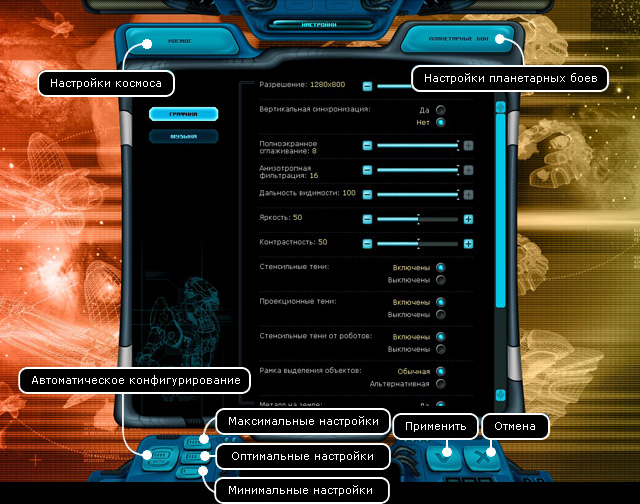

Руководство рейнджера > Экран
главного меню > Настройки
|
Руководство рейнджера > Экран
главного меню > Настройки
|
| Настройки Окно "Настройки" позволяет установить различные параметры игры таким образом, чтобы достичь ее оптимальной производительности на вашем компьютере. Если вы опытный пользователь, то можете осуществить настройку каждого параметра вручную, описание этих параметров приведено ниже. В противном случае вы можете воспользоваться кнопками для быстрой (и в большинстве случаев, оптимальной) установки всех параметров по умолчанию в зависимости от конфигурации вашего компьютера. |

| Чтобы осуществить быструю установку сразу всех параметров:
• Нажмите на одну из трех специальных кнопок, расположенных в левой нижней части окна. Так, если у вас Pentium III 1500 МГц или Athlon 1700+ с 512 Мб памяти, то нажмите кнопку "Минимальные настройки". Если у вас Pentium III 1800 МГц или Athlon 2400+ с 1 Гб памяти, нажмите кнопку "Максимальные настройки". Если параметры вашего компьютера находятся между минимальными и максимальными требованиями, выберите "Оптимальные настройки". Чтобы внесенные изменения вступили в силу: • Нажмите кнопку "Применить". Чтобы покинуть окно настроек без сохранения изменений: • Нажмите кнопку "Отмена" или клавишу Esc. Описание параметров окна настроек для космоса Все параметры разбиты на три группы: Общие, Графика и Музыка, между которыми вы можете переключаться, нажимая одноименные кнопки в левой верхней части окна. Общие Язык - в настоящее время только русский (Russian). Упрощённый расчёт галактики - уменьшение количества просчетов поведения кораблей. Используется для слабых конфигураций, дабы ускорить скорость работы. "Да" - корабли "живут" в ближайших трех секторах, "нет" - полноценное поведение кораблей по всей галактике. Включить поддержку многоядерности - опция служит для того, что бы равномерно распределить нагрузку игрой всех процессорных ядер. Рекомендовано использовать в случае наличия более, чем одного процессорного ядра. После применения настройки игру необходимо перезапустить вручную. Приказ по умолчанию - действие, которое будет совершать ваш корабль в космосе, по отношению к кораблю, на который вы кликаете двойным нажатием левой кнопки. • Интеллектуальный - компьютер сам определяет, какое действие производить. • Приближаться - приближение на максимально близкое расстояние к кораблю • Преследовать - преследование цели Правый клик мышки по кораблю. На правую кнопку мышки можно задать три различных действия: • Сканирование - если у вас на корабле установлен сканер, то будет производиться сканирование цели. • Разговор - устанавливается связь с целью. • Менять приказ - изменение приказа действия, оказываемого на корабль. Длительность дня. Это скорость показа событий в течение хода. Для слабых компьютеров рекомендуется выставить значение "Медленно", чтобы процессор успевал просчитать следующий ход при многодневном перелете. Автоцентрирование камеры на корабль. Это управление камерой. В положении "да" камера всегда следует за кораблем игрока. В положении "нет" камера остается в месте последнего клика мыши курсором. Отображать длину пути. Это показ длины пути в единицах, в пределах одного хода. Разрешить действия на двойной клик мышки. Это управление действием, которое будет совершать ваш корабль в космосе, когда вы кликаете двойным нажатием левой кнопки мыши. Количество результатов поиска в ЦР. Задается количество показываемых результатов в Информационном центре при поиске в Центре рейнджеров. Количество новостей в журнале. Задается количество загружаемых в бортовой журнал новостей. История полета (дни). Чем больше значение параметра, тем дальше можно будет прокручивать время назад в режиме просмотра истории полетов, чтобы посмотреть, как развивались события в прошлом. Параметр влияет на размер сохраняемого файла игры. Поскольку запись событий истории требует определенных системных ресурсов, то на медленных машинах рекомендуется установить значение этого параметра равным 1. Скорость скроллинга. Параметр влияет на скорость прокрутки экрана в режиме космоса, когда вы подводите курсор мыши к границе экрана. Большее значение параметра приводит к более быстрому скроллингу. Начало расчета следующего дня. Данный показатель позволяет установить начало расчета следующего дня при многодневном перелете. Дело в том, что начав расчет, уже невозможно сделать откат в реальном времени, при нажатии на кнопку "Конец хода". По умолчанию параметр установлен в 100%, это значит автоматическое определение начала расчета. При параметре отличном от 100%, начало расчета происходит в строго установленный момент. Допустим при 99%, только в самом конце дня будет начинаться расчет следующего. На слабых компьютерах в этом случае возможно притормаживание. При 0%, расчет будет начинаться сразу после завершения расчета текущего дня (пока на экране показывается вся графика), это позволит наиболее плавно, без тормозов, двигаться кораблю в многодневном полете, однако, нажав "Конец хода" для прерывания такого полета, всегда будет проходить лишний день перед остановкой корабля. Автопилот в черных дырах. Устанавливается время, через сколько секунд переключится в режим автопилота корабль в аркадном режиме. Отключить автопилот в черных дырах. Автопилот выключен - положение "да", включен - положение "нет". Графика Параметры влияют на отображение некоторых графических элементов игры и скорость вывода графики в целом. Разрешение - ползунок, схематично показывающий и позволяющий выбирать одно разрешение из возможных для данной конфигурации. В списке присутствуют разрешения различных форматов и размеров, от 1024х768 в формате 4:3 и до 1920х1200 с соотношением сторон 16:10. Вертикальная синхронизация - синхронизация кадровой частоты в игре с частотой вертикальной развёртки монитора. При этом максимальный FPS с вертикальной синхронизацией приравнивается к частоте обновления монитора. Оконный режим - позволяет запускать игру не на весь экран, а лишь на его часть. Для этого необходимо также выставить желаемое разрешение, которое будет ниже максимального у монитора, в настройках игры. Настоятельно рекомендуется включить эту опцию, так как тогда при выставлении меньшего разрешения, чем у монитора, качество изображения не будет падать. Крупный шрифт в квестах на высоких разрешениях экрана - включает увеличенный шрифт в текстовых квестах. Эффект проявляется в том случае, если разрешение экрана по вертикали более 1024 точек. Яркость, Контрастность - позволяют настроить значения соответствующих параметров прямо из игры. Фон, Анимация капитанов, Анимация звезд, Туманности, Спутники, Шлейфы за кораблем, Кометы, Космический ветер, Облака у планет, Атмосфера у планет - отключение всех или некоторых из этих параметров позволяет увеличить скорость вывода графики на медленных машинах в режиме космоса. Анимация правительства, Анимация оборудования, Анимация ангара, Анимированный задний план на главном экране - отключение всех или некоторых из этих параметров позволяет увеличить скорость вывода графики на медленных машинах в режиме планеты. Область вне радара - нормальная или затененная. Установка показа затененной области вне радара замедляет вывод графики в режиме космоса, поэтому не включайте его, если у вас медленная машина. Размывать задний план - эффект расфокусировки для заднего плана при активности какого-либо окна. Не рекомендуется использовать на слабых конфигурациях. Динамическое расположение подсказок - позволяет показывать подсказку об объекте не в углу экрана, а прямо возле курсора. FPS - этот параметр позволяет оценить, как быстро осуществляется вывод графики на вашей машине. Его включение приводит к показу надписи в верхней части экрана - количества выводимых кадров в секунду (Frames Per Second). Значение FPS меньше 30 негативно влияет на зрение, в этом случае рекомендуется отключить вывод некоторых или всех графических элементов на этой вкладке. Тип скриншотов - этот параметр позволяет задать тип скриншота, в котором он будет сохраняться. Создание скриншота везде осуществляется нажатием клавиши F9, кроме режима планетарного боя. В режиме планетарного боя создание скриншота осуществляется нажатием клавиши Print Screen. Скриншоты сохраняются в папке Screenshots, находящейся в корневой папке игры. Шрифт на гала-карте - этот параметр позволяет задать удобный для вас отображаемый текст на галактической карте. Музыка Параметры влияют на проигрывание фоновой музыки и звуковых эффектов в игре, а также на общую производительность игры в целом. Если у вас медленная машина, отключите в первую очередь проигрывание музыки, это избавит процессор от необходимости декодирования музыкальных файлов. Звуковые эффекты на скорость практически не влияют. Звуки - есть или нет. Звуки в космосе - есть или нет. Громкость звуков - значение от 0 до 100%. Музыка - есть или нет. Музыка в космосе - есть или нет. Громкость музыки - значение от 0 до 100%. Описание параметров окна настроек для планетарных боев Здесь расположены две группы: Графика и Музыка, между которыми вы можете переключаться, нажимая одноименные кнопки в левой верхней части окна. Графика Параметры влияют на отображение некоторых графических элементов игры и скорость вывода графики в целом. Разрешение - ползунок, схематично показывающий и позволяющий выбирать одно разрешение из возможных для данной конфигурации. В списке присутствуют разрешения различных форматов и размеров, от 1024х768 в формате 4:3 и до 1920х1200 с соотношением сторон 16:10. Установка меньшего разрешения экрана позволяет увеличить скорость вывода графики на медленных машинах. По умолчанию параметр равен аналогичному в режиме космоса. Вертикальная синхронизация - синхронизация кадровой частоты в игре с частотой вертикальной развёртки монитора. При этом максимальный FPS с вертикальной синхронизацией приравнивается к частоте обновления монитора. Полноэкранное сглаживание - полноэкранное сглаживание позволяет устранить характерные «лесенки» на границах поверхностей. Но следует учитывать, что полноэкранное сглаживание потребляет немало вычислительных ресурсов, что приводит к падению частоты кадров. Существует возможность регулировать уровень фильтрации. Анизотропная фильтрация - метод улучшения качества изображения текстур на поверхностях, сильно наклонённых относительно камеры. Существует возможность регулировать уровень фильтрации. Дальность видимости - расстояние в процентах от камеры, на котором видны объекты. Уменьшение параметра ведет к росту производительности. Яркость, Контрастность - позволяют настроить значения соответствующих параметров. Стенсильные и проекционные тени - это тени от любых объектов на картах. Стенсильные тени от роботов - это тени от роботов. Значительно влияют на производительность системы. Рекомендуется на слабых машинах отключать их. Рамка выделения объектов - обычная и альтернативная. При выделениях нескольких объектов, используется рамка. Вы можете менять ее вид. Обычная - яркозеленая рамка пустая внутри, а альтернативная - зеленая рамка закрашенная черным цветом внутри. Металл на объектах и земле - если отключить этот параметр, то игра света на металлических объектах пропадет. Поддержка курсора - аппаратная, программная. При аппаратной поддержке движения мышки становятся более плавными. В Windows 98 доступна только программная поддержка курсора. Небо - качество неба нужно выбрать от возможностей компьютера. Если у вас мощная система, то вы можете смело установить высокое качество и наслаждаться видами инопланетных пейзажей во всей красе. На более слабых компьютерах нужно ставить низкое качество или отключать небо для повышения производительности. Музыка Параметры влияют на проигрывание фоновой музыки и звуковых эффектов в игре, а также на общую производительность игры в целом. Если у вас медленная машина, отключите в первую очередь проигрывание музыки, это избавит процессор от необходимости декодирования музыкальных файлов. Звуковые эффекты на скорость практически не влияют. Музыка - есть или нет Громкость музыки - значение от 0 до 100%. Звуки - есть или нет. Громкость звуков - значение от 0 до 100%. |